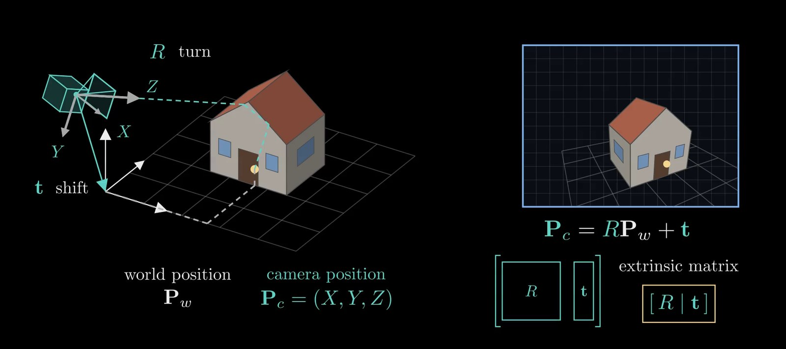
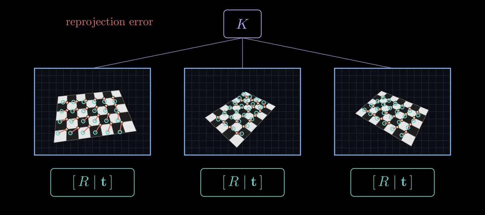
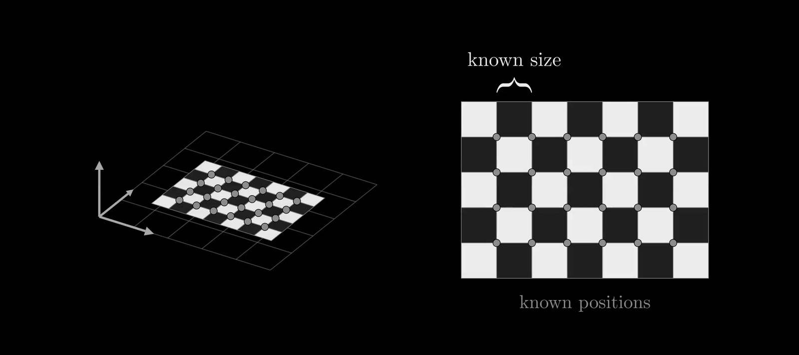

Camera Extrinsic Matrix
The camera extrinsic matrix describes where a camera is and which way it points. Mathematically, it is the rigid transformation from the world coordinate system to the camera's local 3D coordinate system: a rotation followed by a translation,
\[P_c = R \, P_w + t\]
where \(P_w\) is a point's position in world coordinates and \(P_c = [X, Y, Z]^T\) is the same point in camera coordinates (origin at the camera center, \(Z\) along the viewing direction, as in Camera Intrinsic Matrix). Estimating the extrinsic matrix is a fundamental problem in 3D vision.
The extrinsic matrix is typically represented as a \(3 \times 4\) matrix, \(E = [R | t]\), where \(R \in SO(3)\) is a \(3 \times 3\) rotation matrix and \(t \in \mathbb{R}^3\) is a \(3 \times 1\) translation vector.
Video: Camera Intrinsics and Extrinsics: From a 3D Point to a Pixel, a four-minute visual explainer of this note and its companion, Camera Intrinsic Matrix.
What \(R\) and \(t\) Mean
- \(R\) has nine entries but only three degrees of freedom. \(SO(3)\) is the set of rotation matrices, those with \(R^T R = I\) and \(\det R = 1\). The rows of \(R\) are the camera's \(X\), \(Y\) and \(Z\) axes written in world coordinates, so \(R\) turns world directions into the camera's directions.
- \(t\) is not the camera's position. Setting \(P_w = 0\) shows that \(t\) is the world origin expressed in camera coordinates. The camera center \(C\), in world coordinates, is the point that maps to \(P_c = 0\): \(C = -R^T t\), or equivalently \(t = -R\,C\).
- Together that is six numbers: three for the camera's orientation and three for its position.
- Conventions differ between tools. OpenCV and COLMAP store this world-to-camera form. Many graphics and NeRF-style datasets store the inverse, camera-to-world, \([R^T \mid C]\), whose columns are the camera's axes and whose last column is the camera center; OpenGL-style cameras also look down \(-Z\) with \(Y\) up. Check which convention a dataset uses before mixing tools.
Combined with the intrinsic matrix \(K\), the extrinsics give the full projection of a world point to its pixel \((u, v)\):
\[Z \begin{bmatrix} u \\ v \\ 1 \end{bmatrix} = K \, [R \mid t] \begin{bmatrix} P_w \\ 1 \end{bmatrix}\]

The method you choose depends heavily on what information you already have (e.g., known intrinsics, 3D-to-2D point correspondences, or multiple views). Here are the standard approaches to estimating the extrinsic matrix.
1. The Perspective-n-Point (PnP) Problem
If the camera intrinsic matrix \(K\) is known and you have a set of known 3D points in the world \(X_i\) (their world positions, for \(i = 1, \dots, n\)) and their corresponding 2D projections in the image \(u_i\), estimating the extrinsics becomes a PnP problem.
- P3P (Minimal Solver): Requires exactly 3 point correspondences (plus a 4th to disambiguate multiple algebraic solutions). It relies on the law of cosines to find the distances from the camera center to the 3D points, allowing the recovery of pose.
- EPnP (Efficient PnP): The standard choice for \(n \ge 4\) points. It expresses the \(n\) 3D points as a weighted sum of four virtual control points. It operates in \(O(n)\) time and is highly resilient to noise compared to classical methods.
- RANSAC + PnP: In practice, 2D-to-3D feature matching (e.g., using SIFT, ORB, or deep features) produces outliers. PnP is almost always wrapped inside a RANSAC (Random Sample Consensus) loop to robustly estimate the pose using only inlier correspondences.
2. Direct Linear Transform (DLT)
If you do not have the intrinsic matrix, or if you want an initial linear guess for the full projection matrix \(P = K[R|t]\), you can use DLT.
Using the homogeneous projection equation \(u_i \sim P X_i\), you can isolate \(P\) by utilizing the cross product: \(u_i \times (P X_i) = 0\). Here \(u_i\) and \(X_i\) carry an appended \(1\), and \(\sim\) means equal up to a nonzero scale factor (the depth); two parallel vectors have a zero cross product.
- Each 3D-to-2D correspondence provides two linearly independent equations.
- \(P\) has 12 entries but only 11 degrees of freedom, since its overall scale is arbitrary. With \(n \ge 6\) points, you can formulate a system \(A \cdot \text{vec}(P) = 0\), where \(\text{vec}(P)\) stacks the 12 entries of \(P\) into a vector and each correspondence adds two rows to \(A\).
- The solution for \(P\) is the right singular vector corresponding to the smallest singular value of \(A\) (via SVD).
- Extracting Extrinsics: Once \(P\) is found, you can decompose the leftmost \(3 \times 3\) submatrix, which equals \(KR\), using an RQ decomposition (QR applied in reverse order) to separate the intrinsic matrix \(K\) (upper triangular) and the rotation matrix \(R\) (orthogonal). The translation vector \(t\) is then recovered using \(K^{-1}\): \(t = K^{-1} p_4\), where \(p_4\) is the last column of \(P\).
3. Non-Linear Optimization (Bundle Adjustment)
Linear methods (like DLT) and algebraic methods (like EPnP) do not minimize physically meaningful errors and are susceptible to noise. They are typically used to generate a good initialization for a non-linear optimizer.
You refine the initial \(R\) and \(t\) by minimizing the reprojection error:
\[\arg\min_{R, t} \sum_{i=1}^{n} \| u_i - \pi(K, R, t, X_i) \|^2\]
Where \(\pi\) is the perspective projection function: \(\pi(K, R, t, X_i)\) moves \(X_i\) into camera coordinates with \(R\) and \(t\), applies \(K\) and divides by the depth, returning the pixel where the current pose predicts point \(i\). Each term is the distance, in pixels, between where the point is observed and where it is predicted, which is why this error is physically meaningful. With only the pose free, this is pose refinement (sometimes called motion-only bundle adjustment); full bundle adjustment also refines the 3D points and many cameras at once.

- Parameterization: To enforce the orthogonality constraint of the rotation matrix during optimization, \(R\) is parameterized using quaternions or the Lie algebra \(\mathfrak{so}(3)\) (via the exponential map).
- Solvers: This non-linear least-squares problem is typically solved using the Levenberg-Marquardt algorithm or Gauss-Newton.
4. Calibration Targets (Zhang's Method)
If you have access to the physical camera and are setting up an environment, Zhang's method is the industry standard for estimating both intrinsics and extrinsics simultaneously.
What makes it work is that the target's physical size is known. The checkerboard's squares are printed with a known side length \(s\), measured in millimeters, so every inner corner has known world coordinates: put the world origin at one corner, with the world's \(x\) and \(y\) axes along the board's edges, and the corner \(a\) squares across and \(b\) squares down sits at \(P_w = [a\,s,\ b\,s,\ 0]^T\). These exact 3D positions are what the method fits the photos to, and they set the scale: with \(s\) in millimeters, \(t\) comes out in millimeters too. Measure \(s\) on the actual print, since printers often rescale pages.

- A planar target (like a checkerboard) is captured from multiple views. Because the target is planar, we can set the world coordinate \(z = 0\) for all points, simplifying the projection matrix to a \(3 \times 3\) Homography matrix \(H\): with \(z = 0\) the third column \(r_3\) of \(R\) drops out, so \(H\) is proportional to \(K [r_1 \ r_2 \ t]\), where \(r_1, r_2, r_3\) are the columns of \(R\).
- The method estimates the homography for each view using DLT.
- Using the constraints of the orthogonal rotation matrix (\(r_1^T r_2 = 0\) and \(\|r_1\| = \|r_2\|\)), the intrinsics \(K\) are solved globally. Each view gives two such equations, so three views with different board orientations are enough for the full \(K\) (two, if the skew is taken to be zero).
- Once \(K\) is known, the extrinsic matrix for each specific image view \(j\) is extracted algebraically from its homography \(H_j\), whose columns are \(h_1, h_2, h_3\):
\[r_1 = \lambda K^{-1} h_1\]
\[r_2 = \lambda K^{-1} h_2\]
\[r_3 = r_1 \times r_2\]
\[t = \lambda K^{-1} h_3\]
Here \(\lambda = 1 / \|K^{-1} h_1\|\) undoes the unknown scale of \(H_j\), so that \(r_1\) has unit length.
Finally, all parameters (the shared \(K\), each view's \(R\) and \(t\), and the lens distortion coefficients) are refined together by minimizing the reprojection error over every corner in every photo, as in section 3. This closed-form start followed by non-linear refinement is what cv2.calibrateCamera does.
Summary Workflow
- Need to calibrate a physical setup? Print a checkerboard, measure its squares, and use Zhang's method (e.g.,
cv2.calibrateCamera). - Tracking camera pose in a known 3D scene? Match 2D features to 3D scene points, run EPnP inside RANSAC (e.g.,
cv2.solvePnPRansac), and follow up with Levenberg-Marquardt optimization.